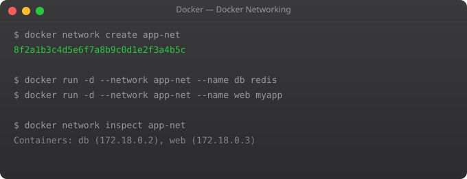

Every container in Docker gets its own network interface and IP address. But by default, how do they find each other? How does your web application container know the IP address of the database container, especially when that IP might change every time the database container restarts? How do you control which containers can communicate with which?
Docker networking is the answer to all of these questions. And once you understand it, architecting multi-container applications becomes much cleaner. The key concept is: containers on the same named network can reach each other by container name. Docker has a built-in DNS server that handles the resolution automatically.
docker network ls
# bridge — default network for containers that don't specify a network
# host — container uses host network directly (no isolation)
# none — container has no network access# Create a custom network
docker network create my-app-network
# Run containers on the same network
docker run -d --name db --network my-app-network -e POSTGRES_PASSWORD=pass postgres:15
docker run -d --name app --network my-app-network -e DB_HOST=db -p 3000:3000 my-web-app
# The app container can reach the database at hostname "db"
# because they share the custom network
# Test from inside the app container
docker exec app ping db
docker exec app curl http://api-service:8080/health# Map host:container port
docker run -p 8080:80 nginx
# Map on specific interface only (more secure)
docker run -p 127.0.0.1:8080:80 nginx
# Map to a random available port on the host
docker run -p 80 nginx
docker port container-name 80 # See what port was assigned
# Publish ALL exposed ports to random host ports
docker run -P nginx# Inspect a network (see connected containers and their IPs)
docker network inspect my-app-network
# Connect a running container to an additional network
docker network connect my-app-network existing-container
# Disconnect a container from a network
docker network disconnect my-app-network container-name
# Remove unused networks
docker network prune
# Test connectivity from inside a container
docker run --rm --network my-app-network nicolaka/netshoot nslookup dbIn Part 6, we cover Docker Compose — the tool that lets you define and run entire multi-container applications with a single YAML file and a single command. Compose is how you put volumes, networking, and multiple services together in a maintainable way.
Containers on the same custom Docker network can communicate using their container names as DNS hostnames. Docker includes a built-in DNS server that resolves container names to their IP addresses. Containers on the default bridge network can only communicate by IP address, not by name — this is why custom networks are recommended for multi-container applications.
The bridge network is Docker's default network driver. When you run a container without specifying a network, it connects to the default bridge network. All containers on the same bridge network can communicate with each other. Docker also creates a virtual bridge interface (docker0) on the host that acts as the gateway for containers.
In bridge mode (default), the container gets its own network namespace with its own IP address. Communication with the host or outside world goes through NAT. In host mode, the container shares the host's network namespace directly — there is no NAT and the container can bind to host ports directly. Host mode gives better performance but less isolation.
Port mapping (the -p flag) creates a NAT rule that forwards traffic from a host port to a container port. For example, -p 8080:80 means any traffic arriving at port 8080 on the host machine is forwarded to port 80 inside the container. The container is not directly accessible from outside; the host acts as a proxy.
Create separate custom networks for different application components. Containers can only communicate if they are on the same network. For example, your web server might be on a front-end network (accessible from outside) and a back-end network (shared with the database). The database is on the back-end network only and is never reachable from outside.